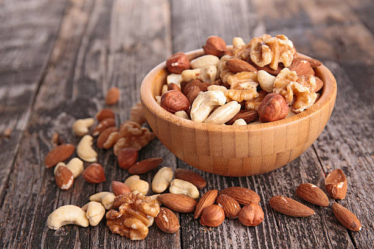
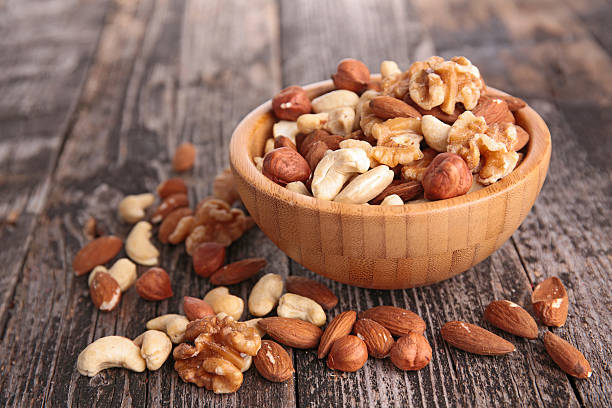

Si vous voulez changer d'alimentation pour des raisons environnementales ou de santé, ou tout simplement pour des questions d'éthique animale, vous êtes au bon endroit. Venez découvrir nos menus incroyables, végétariens concoctés autour de saveur unique.

 



Vous ne savez pas comment vous y prendre ? Pas d'inquiétude, cliquer sur imagepour découvrir une recette qui vous expliquera pas à pas comment faire. Vous pourrez même connaitre les nutriments exactes des aliments que vous mangerez.
A Découvrir
Jetez un oeil avant d'aller regarder nos recettes, les vitamines c'est important
| Nutriments | Rôles | Aliments |
|---|---|---|
| Vitamines B | Les vitamines B sont impliquées dans de nombreux rôles, tels que la production d'énergie et le bon fonctionnement du système nerveux. La plupart des vitamines B ne sont pas stockées par l'organisme en quantité suffisante. Un apport adéquat de vitamines B est important pour assurer une production optimale d'énergie. |
|
| Vitamines C | La concentration en vitamine C est particulièrement importante dans les cellules assurant la défense immunitaire de l'organisme. Elle augmente la mobilité des globules blancs et stimule la production de cytokines, les messagers activant la réponse immunitaire tout en augmentant l'absorption du fer. |
|
| Fer | Le fer joue un rôle majeur en tant que constituant de l’hémoglobine, une protéine des globules rouges en charge du transport de l’oxygène des poumons vers les cellules de l’organisme. Il intervient également dans le processus de division cellulaire. A noter que certains éléments influencent l’assimilation du fer. La vitamine C va par exemple favoriser l’absorption du fer. Il est donc intéressant de consommer avec une viande, source de fer, des légumes permettant un apport en vitamine C. |
|